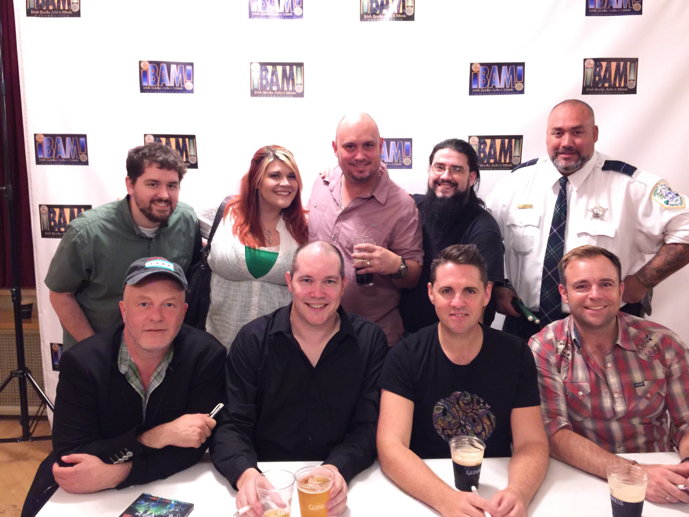

SSG meets The High Kings |
|---|
On Sunday, October 11, 2015, The High Kings brought their amazing and unique take on Irish music back to Chicago, and St. Stephen’s Green could not resist going to the show. Every member of The High Kings brings amazing talent vocally and instrumentally and makes every performance incredible, including Sunday’s show. After the show, SSG made sure to meet up with The High Kings at the autograph table to introduce the band and get a picture together. They were especially friendly and kind, true gentlemen representing Irish culture in the best way possible. St. Stephen’s Green would not be where it is without The High Kings. While SSG does play some of The High King’s songs, it is the unique style that has been the greatest influence. The instrumental layering, the upbeat cheerfulness that even pervades Ireland’s saddest ballads, and the twists on traditional songs through interesting break strains and slow or fast verses; these are just a few of things The High Kings have brought to the genre, and SSG gladly takes up the style to help spread the Irish culture. Thank you to The High Kings! We wish you continued and increasing success around the world!  |
SSG on Houli's Houley |
|---|
St. Stephen’s Green joined the fantastic Houli’s Hooley Radio Hour on May 30th. Listen to the clips below to hear news from the Irish community, learn about how SSG formed, and listen to some of our songs, performed live! The clip is available for download from the Houli's Hooley website. Part 1Part 2 |